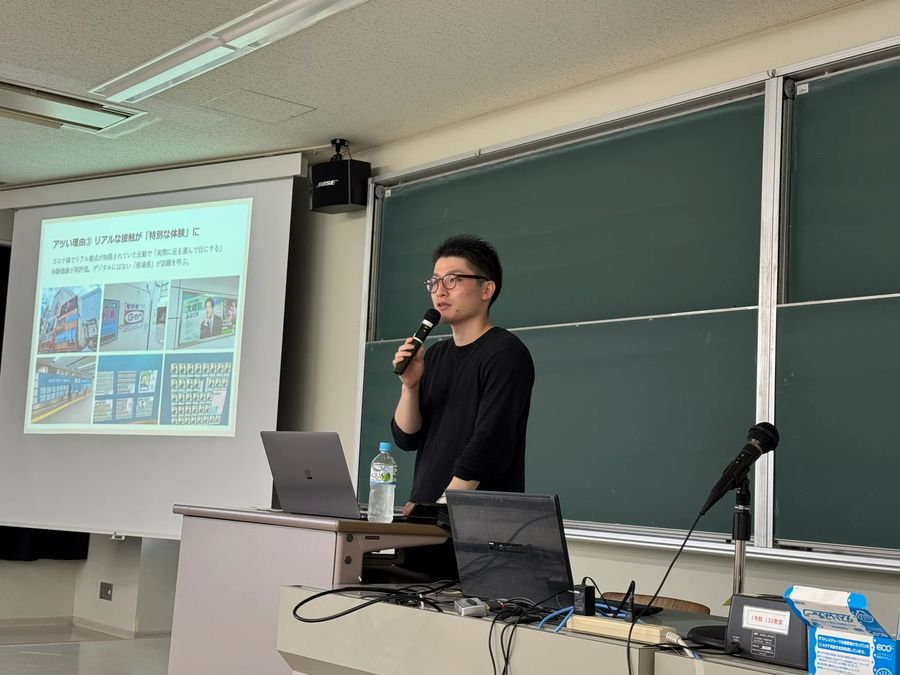
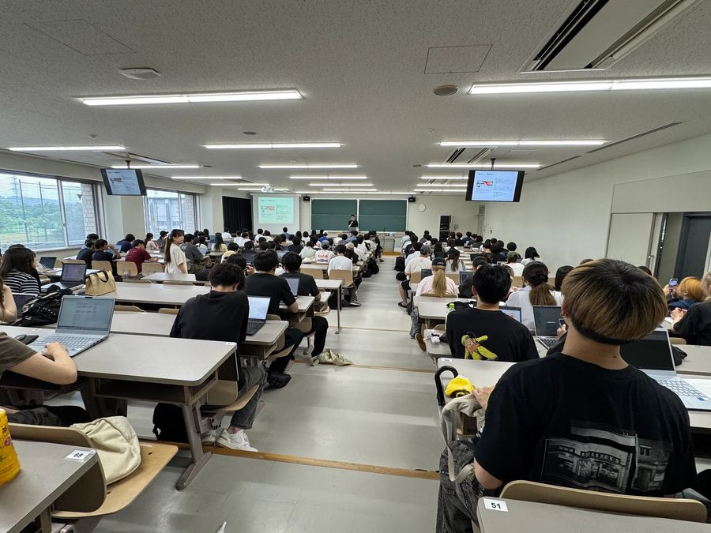
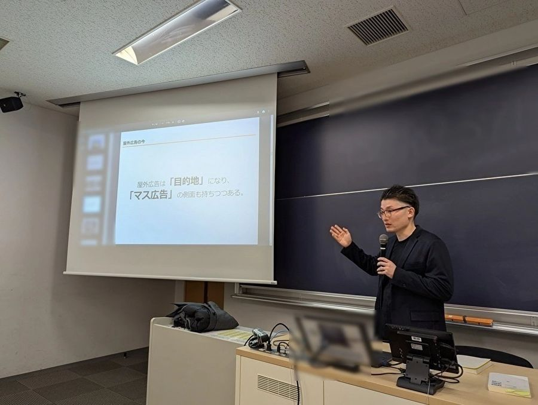
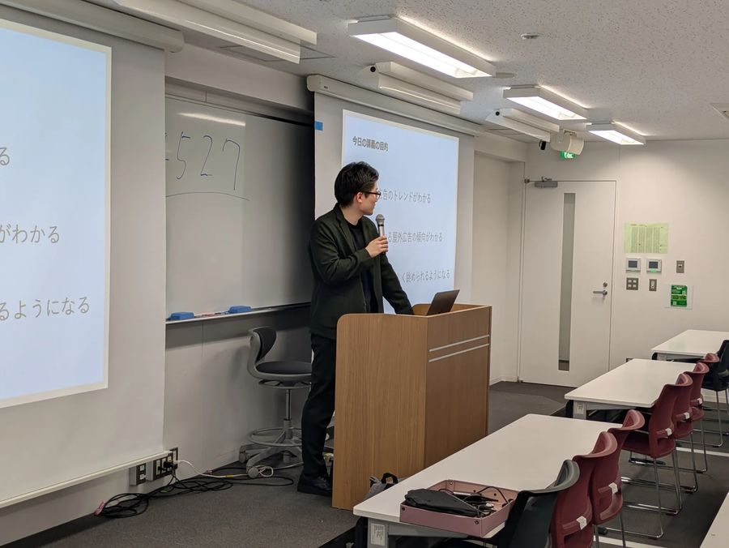
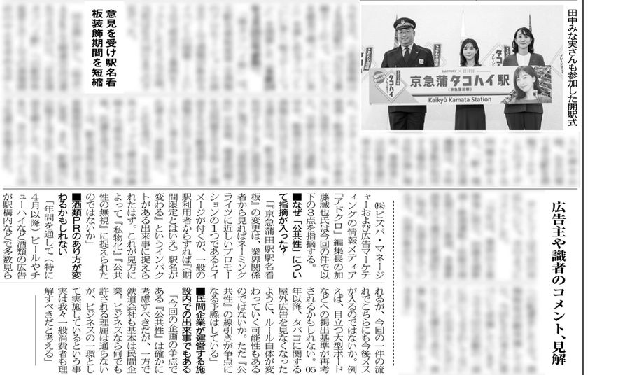
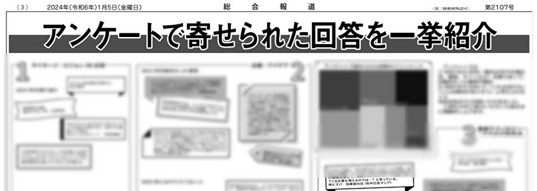
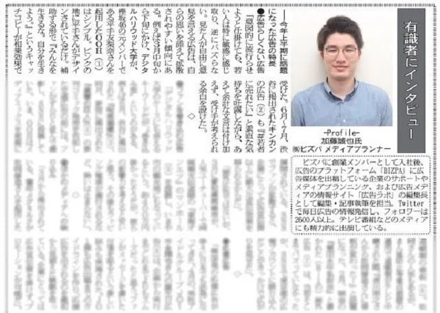

登壇予定と、2021年から現在までの登壇・出演・寄稿・取材などを新しい順に掲載しています。
2026
-
登壇予定
ad:tech tokyo 2026「リアルメディア最前線2026」
10/22（木）17:00-17:40。ad:tech tokyo 2026にて「リアルメディア最前線2026」にモデレーターとして登壇。街、店舗、移動・休憩空間…それぞれ異なる接点を持つ3社と、AI時代にリアルメディアの価値はどう変わるのかを議論。OOH/DOOHの現在地と、これからの可能性を思う存分掘り下げます。
-
登壇予定
虎ノ門広告祭2026「OOHだいすきクラブ」
10/13（火）16:30-17:30。虎ノ門広告祭2026にて「OOHだいすきクラブ」セッションに登壇します。イチオシ事例を持ち寄り愛でる60分。なんでもありで、意外となんでもはできない。企画と拡散性と場所の掛け算。だからこそ面白いOOHの魅力を、思う存分語り倒します。
-
講演・登壇
第10回官民合同『屋外広告・景観』勉強会
神奈川県県土整備局都市整備課と一般社団法人神奈川県広告美術協会の共催で実施された、官民合同『屋外広告・景観』勉強会で基調講演をさせていただきました。国の重要文化財に指定されている会議場にて、行政側から県内各市町の屋外広告物担当者と国交省、業界側からは山形、群馬からの参加者を含む、七十数名が参加されていました。
-
連載・寄稿
2026年上半期に話題になったOOH 傾向は“むず痒さ・没入感・推し活”
MarkeZineさんへの寄稿記事です。2026年7月の月間ランキングで10位になりました。2021年から連載を開始し、本稿で5年目となります。
-
対談
「OOH事例集2025」内で対談を掲載
総合報道さん（@sogohodopopeye）発刊の「OOH事例集2025」内で対談を掲載いただきました。企画やクリエイティブに関わる方は参考になると思います。
-
講演・登壇
静岡愛✕ビジネス M20クロスカフェVol.12番外編「広告の最前線から考える 静岡の広告クリエイティブの未来」
5/21に静岡で行われた、「広告の最前線から考える 静岡の広告クリエイティブの未来」に登壇させていただきました。イベントレポートにてお話しした内容を一部紹介いただいています。
開催告知（ビズパ） ／ イベントページ（Peatix） ／ 開催のお知らせ（静岡理工科大学グループ） ／ イベントレポート（SISTコラボスクエア） ／ イベントレポート（静岡マーケティングサロン）
-
メディア出演
【株式会社ビズパ：加藤誠也～後編】渋谷の広告コスパが悪化中?! 2026年OOHのトレンド5選／森野誠之の毎日堂
森野さん（@uneidou）の「毎日堂・マーケティングラジオ」に出演させて頂きました。OOHトレンドについてお話しています。
-
メディア出演
【株式会社ビズパ：加藤誠也～前編】広告の95%はスルーされる。プロが「跳ねる広告」の共通点を語る／森野誠之の毎日堂
森野さん（@uneidou）の「毎日堂・マーケティングラジオ」に出演させて頂きました！足で稼ぐ「広告巡礼」のリアルを赤裸々にお話しさせていただきました。
-
取材・コメント
「推し活・応援広告調査2025」にてコメント掲載
ジェイアール東日本企画様が運営する応援広告事務局「Cheering AD（チアリングアド）」で実施した、「推し活・応援広告調査2025」内でコメントさせていただきました。
-
講演・登壇
熊本市屋外広告物講演会（2025）に登壇
1月16日に熊本市屋外広告物講演会にて講師として登壇し、「屋外広告物の東京トレンド」をテーマに最新トレンドや特徴を紹介させて頂きました。登壇者は私と長崎県大村市で屋外広告のビジネスを展開するヨシトメ工芸社長の野島様。
-
メディア出演
「応援広告」はなぜ生まれたのか？：ウォークスルー型コンテンツの可能性 #コムギコ #61
年始にコムギさんとのミーグリ（1on1ミーティング）で雑談させていただいたネタを番組内で取り上げていただきました。


2025
-
連載・寄稿
2025年下半期に話題になったOOH15選！「BMSG」から「無限城」まで、SNSで話題化する法則
MarkeZineさんへの寄稿記事です。2026年1月の月間アクセスランキング9位を獲得しました。
-
主催
2025年のOOH総決算〜話題化した屋外広告を語ろう！（#街ナカ広告ナイト 第3回）
電柱広告のキムラさん、アドバタラヂオのトミナガマコトさんと共同主催で「#街ナカ広告ナイト🌙」の第3回を実施しました。
-
大学
高崎経済大学「国際経営論」にて、「屋外広告とNetflixのOOH戦略」をテーマに特別講義
高崎経済大学「国際経営論」（講義時間90分）に登壇させて頂き、「屋外広告とNetflixのOOH戦略」をテーマに特別講義を実施しました。

-
大学
高崎経済大学「多国籍企業論」にて、「屋外広告と外資系企業の国内OOH戦略」をテーマに特別講義
高崎経済大学「多国籍企業論」（講義時間90分）に登壇させて頂き、「屋外広告と外資系企業の国内OOH事例」をテーマに特別講義を実施しました。

-
連載・寄稿
2025年上半期に話題になったOOH15選！隠れた仕掛けから応援広告まで最新トレンドを解説
MarkeZineさんへの寄稿記事です。2025年8月の月間アクセスランキング2位を獲得しました。また、本記事は2025年上半期のランキングで10位となりました。
-
大学
桜美林大学「広告ビジネス」にて、「屋外広告の最新トレンド」をテーマに特別講義
桜美林大学 西山守准教授が担当する「広告ビジネス」（講義時間100分）に登壇させて頂き、「屋外広告の最新トレンド」をテーマに特別講義を行わせて頂きました。
桜美林大学 ／ 桜美林大学 新宿キャンパス（Instagram） ／ 桜美林大学 新宿キャンパス（Instagram・課題の紹介）
-
大学
東京理科大学経営学部「マーケティング・コミュニケーション」にて、「屋外広告の最新トレンド」をテーマに特別講義
東京理科大学経営学部「マーケティング・コミュニケーション」にて、「屋外広告の最新トレンド」をテーマに特別講義を行わせて頂きました（講義時間90分）。

-
連載・寄稿
BRUTUS（2025/4/15号）ブルータスの東京大全
マガジンハウスから2025年4月1日発売『BRUTUS（ブルータス）』No.1028の特別付録「東京偏愛BOOK」にて、東京で見る街中広告のおすすめスポットを紹介させていただきました。
-
連載・寄稿
バズるOOHの法則 4年間の「広告巡礼」から見えた話題化に欠かせない三要素
MarkeZineさんへの寄稿記事。都内のOOHを見続けて体感した「話題化のヒント」を余すことなく書きました。2025年2月の月間アクセスランキング8位を獲得しました。
-
メディア出演
#42 【景色から目的地へ 屋外広告の移り変わりとSNSの関係性】 ゲスト：アドクロ編集長 加藤誠也
TikTok事務所・代理店を運営するstudio15さんが展開するラジオ番組に出演させていただきました。後編です。
-
メディア出演
#41 【街の景色が変わる！屋外広告に仕組まれた戦略とは！？】 ゲスト：アドクロ編集長 加藤誠也
TikTok事務所・代理店を運営するstudio15さんが展開するラジオ番組に出演させていただきました。前編です。
-
メディア出演
#226 毎週の広告巡礼で業界注目の的！加藤誠也さんと去年の振り返りと2025年の目標について語る
アドバタラヂオさんに出演させていただきました。近況について対談させていただいています。


2024
-
連載・寄稿
2024年下半期に話題となった「オフライン広告」 特徴は“探したくなる・調べたくなる・変化する”
MarkeZineさんへの寄稿記事。2025年1月の月間アクセスランキング3位を獲得しました。
-
大学
東洋大学社会学部「マス・コミュニケーション学特論」にて、「屋外広告の最新トレンド」をテーマに特別講義
東洋大学社会学部の「マス・コミュニケーション学特論」にて、「屋外広告の最新トレンド」をテーマに特別講義を行いました。

-
取材・コメント
【OOH専門家/アドクロ編集長】加藤誠也氏が語るOOH攻略に必須な“体験”の視点とSNSの意識
TikTok事務所・代理店を運営するstudio15さんが展開するWEBメディアにて取材いただきました。
-
大学
「SNSでバズった屋外広告3事例から見る キャッチコピーの極意」というテーマで中央大学国際経営学部の授業に登壇
屋外広告×広告コピーに関する講義内で講師として登壇しました。100分の授業内で様々な事例を見ながら、学生さんと議論しました。
-
メディア出演
#22 広告巡礼でフォロワー16,000人!? | アドクロ編集長 加藤誠也さん（没頭ラジオ）
没頭ラジオに出演し、毎日広告事例を発信し続けている理由などをテーマに対談させていただきました。
-
取材・コメント
総合報道（6/25号）京急蒲タコハイ駅の話題
業界紙『総合報道』『POPEYE（2024年8月号）』の企画にコメントを掲載頂きました。

-
取材・コメント
Z世代に向けた広告は「短い時間で、違和感を与える」べし。街中広告マニアに聞く、街中広告の最新トレンド
移動時間の暇つぶしにはSNSやネットサーフィンを行う人が多いなか、企業が膨大な予算と時間をかけて街中に広告を出す意味について、お話させて頂きました。
-
メディア出演
【耳から学ぶ】YOUTRUSTから学ぶユーザーを巻きこむオフライン広告（MarkeZine公式Voicy）
寄稿記事「OOHの評価基準は視認者数だけではない YOUTRUSTから学ぶユーザーを巻きこむオフライン広告」をMarkeZineさん公式Voicyで紹介いただきました。
-
連載・寄稿
OOHの評価基準は視認者数だけではない YOUTRUSTから学ぶユーザーを巻きこむオフライン広告
MarkeZineさんへの寄稿記事。何かと話題になる事が多いYOUTRUSTさんのOOH施策を紐解いた記事。2024年3月の月間アクセスランキング9位を獲得しました。
-
メディア出演
【耳から学ぶ】2023年下半期に話題となった「オフライン広告」（MarkeZine公式Voicy）
寄稿記事「2023年下半期に話題となった「オフライン広告」 立地よりもコンセプト・余白・演出で拡散を狙う」をMarkeZineさん公式Voicyで紹介いただきました。
-
連載・寄稿
2023年下半期に話題となった「オフライン広告」 立地よりもコンセプト・余白・演出で拡散を狙う
MarkeZineさんへの寄稿記事。2023年下半期に話題となったOOHや新聞広告について解説しています。同サイト上で2024年2月の月間アクセスランキング2位を獲得しました。また、本記事は2024年上半期のランキングで18位となりました。
-
連載・寄稿
マーケティングで未来を拓く！2024年度のMarkeZineの注力特集＆テーマを紹介
MarkeZineさんへ寄稿連載中の「デジタルで広がる、オフライン広告の可能性」を注目テーマとしてピックアップいただきました。
-
取材・コメント
総合報道（1/5号）24年のOOHトレンド 事例から読み解く
業界紙『総合報道』さんの企画に掲載頂きました。



2023
-
取材・コメント
浦飯幽助が必殺技を打った先が…！ビル壁を活かした「幽☆遊☆白書」広告がすごかった…専門家が脱帽した理由とは（まいどなニュース）
まいどなニュース様の記事で一言コメントさせて頂きました。
-
講演・登壇
KINCHOと日本ハムに聞く“違和感×寄り添い”の広告作り SNSで話題にされる秘訣を紐解く（MarkeZine Day 2023 Autumn）
モデレーターとして、2社のプロモーション施策についてお話をお伺いしました。2023/11/24のアクセスランキングで1位を獲得しました。
-
大学
「SNSでバズった屋外広告5事例から学ぶ キャッチコピーの極意」というテーマで中央大学国際経営学部の授業に登壇
広告コピーに関する講義内で講師として登壇しました。屋外広告のコピーについて、事例を見ながら学生さんと議論しつつ、理解を深めて頂きました。
-
講演・登壇
話題になったあの広告の裏側、KINCHOとシャウエッセンに学ぶ 人に話したくなる広告の作り方（MarkeZine Day 2023 Autumn）
MarkeZineDay2023 Autumnのセッションでモデレーターとして出演しました。
-
メディア出演
9/20（水）2023年上半期に話題となった「オフライン広告」（MarkeZine公式Voicy）
寄稿記事「2023年上半期に話題となった「オフライン広告」 要素の引き算や期待のあおりが鍵に」をMarkeZineさん公式Voicyで紹介いただきました。
-
連載・寄稿
2023年上半期に話題となった「オフライン広告」 要素の引き算や期待のあおりが鍵に
MarkeZineさんへの寄稿記事。2023年上半期に話題となったOOHや新聞広告について解説しています。同サイト上で2023年9月の月間アクセスランキング6位を獲得しました。
-
取材・コメント
街中広告のスペシャリストに聞く、アフターコロナの屋外広告やOOHのストロングポイント（@DIME）
@DIMEさんに取材頂いた記事です。街中広告のスペシャリストとして、直近の面白かった事例やキャッチコピーを中心に取り上げて貰っています。
-
取材・コメント
渋谷に「USJまで直進500km」の謎広告 「まさにNO LIMIT？」「大阪らしくて草」…驚きの作戦理由は？（まいどなニュース）
広告巡礼で撮影した写真をご提供、私の所感含めて紹介いただいております。Yahoo!ニュースやライブドアニュースでも取り上げられています。ニュース番組にも撮影画像を提供させて頂きました。
-
メディア出演
【耳から学ぶ】2022年に話題となった「オフライン広告」（MarkeZine公式Voicy）
寄稿記事「2022年に話題となった「オフライン広告」SNSでの話題化は“ファンを起点に”起こす傾向」をMarkeZineさん公式Voicyで紹介いただきました。
-
連載・寄稿
2022年に話題となった「オフライン広告」SNSでの話題化は“ファンを起点に”起こす傾向
MarkeZineさんへの寄稿記事。2022年に話題となったOOHや新聞広告について解説しています。同サイト上で2023年7月の月間アクセスランキング3位、8月は2位を獲得。2023年のMarkeZine人気記事ランキングでは19位になりました。


2022
-
メディア出演
TBS『日曜日の初耳学』 - 言葉ひとつで人の心を動かす【キャッチコピー】を深堀り！
10/30(日)22時放送、同番組の人気コーナー「初耳トレンディ」のコーナーで“広告のキャッチコピー”についてお話させて頂きました。
-
連載・寄稿
雑誌『MarkeZine』vol.78号 - 話題化につながる「オフライン広告」の4要素
雑誌『MarkeZine』さんに寄稿させていただきました。実際の広告事例から、どういった要因で話題化に繋がっていくのかを解説しています。
-
取材・コメント
U-29 - 熱狂的に日々働く加藤誠也がU-29世代に伝えたい、自身の経験から学んだこと
ユニークな価値観を持つ29歳以下の世代のためのメディア「U-29」で取材を受けました。過去の経歴や仕事観などを記事にして頂きました。


2021
-
連載・寄稿
MarkeZine - SNSで話題になった「Tinder」のオフライン広告を分析！話題化を生み出す3つのコツとは
MarkeZineさんへの寄稿記事。渋谷で実施されたマッチングアプリ「Tinder」の広告について、その話題化の要因を解説しています。
-
連載・寄稿
MarkeZine - 2021年上半期に話題になった「オフライン広告」とは？ 特徴と話題化のコツを探る
MarkeZineさんへの寄稿記事。2021年上半期に話題となったOOHや新聞広告について解説しています。2021年9月の月間アクセスランキングで1位を獲得しました。
-
取材・コメント
総合報道（8/5号）- 2021年上半期話題のOOH分析
業界紙『総合報道』さんに取材していただきました。2021年上半期のOOHトレンドや特長についてお話しています。

-
メディア出演
テレビ東京『今日からやる会議』 - さらばカミナリが自腹で広告！「東京フォーク＆スプーン」の宣伝方法を決める！
2021/4/17出演『今日からやる会議』の続編です。「東京フォーク&スプーン」のデザイナー出演の元、どの広告・どのような展開でプロモーションをやっていくのかを会議しました。
-
取材・コメント
テレ東プラス - 新聞の全面広告、バスのフルラッピング、タクシーやネイルサロンにあるデジタルサイネージの広告料はいくら？一挙大公開
2021/4/17出演『今日からやる会議』の記事バージョンです。
-
メディア出演
テレビ東京『今日からやる会議』 - さらばカミナリが自腹で広告！
予算は番組内で獲得した約37万円。広告の賢人として、番組内で開発された「東京フォーク&スプーン」の認知＆売上アップを目的とした広告を提案しました。


過去話したテーマ例
- OOH（交通広告・屋外広告）の最新事例
- 東京の最新OOH（交通広告・屋外広告）トレンド
- OOH（交通広告・屋外広告）の型・考え方
- OOHのキャッチコピー・企画を考えるワークショップ
- OOHを検討する上で注目の駅、エリア
- （新入社員さんなど）OOH出稿のキホン・コツ
登壇・講演・取材のご相談は、トップページのフォームからどうぞ。
ご相談はこちら →